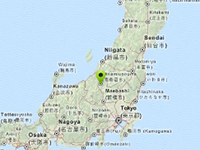

Example of a smooth movement to current GPS location.
Requirement: Location Service Component
Usage instructions:
Add this script to map GameObject.
Add this script to map GameObject.
SmoothMoveExample.cs
/* INFINITY CODE 2013-2016 */
/* http://www.infinity-code.com */
using UnityEngine;
namespace InfinityCode.OnlineMapsExamples
{
[AddComponentMenu("Infinity Code/Online Maps/Examples (API Usage)/SmoothMoveExample")]
public class SmoothMoveExample : MonoBehaviour
{
/// <summary>
/// Move duration (sec)
/// </summary>
public float time = 3;
/// <summary>
/// Relative position (0-1) between from and to
/// </summary>
private float angle;
/// <summary>
/// Movement trigger
/// </summary>
private bool isMovement;
private Vector2 fromPosition;
private Vector2 toPosition;
private void OnGUI()
{
// On click button, starts movement
if (GUI.Button(new Rect(5, 5, 100, 30), "Goto marker"))
{
// from current map position
fromPosition = OnlineMaps.instance.position;
// to GPS position;
toPosition = OnlineMaps.instance.GetComponent<OnlineMapsLocationService>().position;
// calculates tile positions
Vector2 fromTile = OnlineMapsUtils.LatLongToTilef(fromPosition, OnlineMaps.instance.zoom);
Vector2 toTile = OnlineMapsUtils.LatLongToTilef(toPosition, OnlineMaps.instance.zoom);
// if tile offset < 4, then start smooth movement
if ((fromTile - toTile).magnitude < 4)
{
// set relative position 0
angle = 0;
// start movement
isMovement = true;
}
else // too far
{
OnlineMaps.instance.position = toPosition;
}
}
}
private void Update()
{
// if not movement then return
if (!isMovement) return;
// update relative position
angle += Time.deltaTime / time;
if (angle > 1)
{
// stop movement
isMovement = false;
angle = 1;
}
// Set new position
OnlineMaps.instance.position = Vector2.Lerp(fromPosition, toPosition, angle);
}
}
}